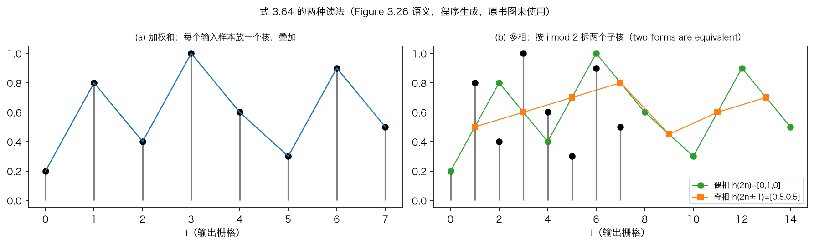
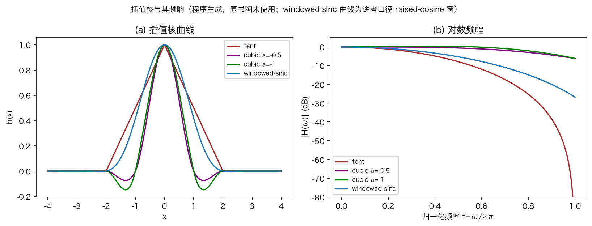
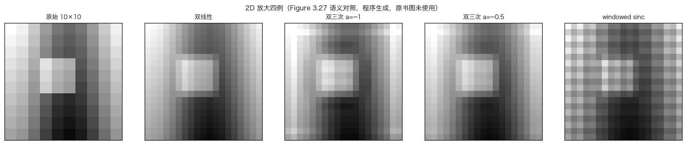
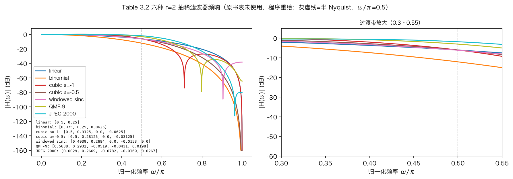
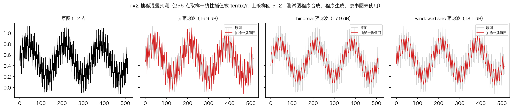

本集路线 · 改变分辨率
放大与缩小，先讲清两件事
上一集留下问题：变换的输出和输入一样大。
放大：插值，往样本之间填点。
缩小：抽稀，先低通再隔点取样。
最后比较 r 等于 2 的七只滤波器。
依据：原书第 149–154 页
本集三步
放大：插值
缩小：抽稀
选滤波器：七只
正课第二十一集
01 / 8
原书第 150 页 · 插值
放大：往样本之间填点
选一只插值核，和图像做卷积。
两种读法：逐样本放核叠加，或按相位取核。
式 3.64：输出点等于所有样本的加权和。
核坐标换成 r 倍，r 是上采样率。
依据：原书第 150 页 + 本集实验

式 3.64 的两种读法：加权和与多相｜程序生成，未用教材或论文原图
正课第二十一集
02 / 8
原书第 150–151 页 · 核的家族
线性、B 样条与三次核
线性核（tent）产生折痕。
立方 B 样条是近似核，图像偏软。
三次核由参数 a 定 x 等于 1 处的导数。
a 取负一最贴 sinc；负二分之一二次精确再现。
依据：原书第 150–152 页 + 本集实验

四只插值核的曲线与对数频幅｜程序生成，未用教材或论文原图
正课第二十一集
03 / 8
原书第 151–152 页 · 高质量插值
windowed sinc 与它的代价
图 3.27 四例：双线性、双三次两档、windowed sinc。
显卡多用双线性，修图软件多用双三次。
windowed sinc 保细节、避混叠，但会振铃。
有人宁可反复做小比例插值。
依据：原书第 151–152 页 + 本集实验

二维放大四例：双线性、双三次两档、windowed sinc｜程序生成，未用教材或论文原图
正课第二十一集
04 / 8
原书第 153 页 · 抽稀
缩小：先低通，再隔点取样
先概念上做低通滤波，避免混叠。
然后每隔 r 个样本取一个。
式 3.66 与式 3.67 是同一只核的两种写法。
平滑核常是插值核的拉伸重标定版。
依据：原书第 153 页 + 本集实验
g(i,j) = (1/r) ΣΣ f(k,l) h(i − k/r, j − l/r)
式 3.67；与式 3.66 逐点一致
正课第二十一集
05 / 8
原书第 154 页 · 七只滤波器
r 等于 2，常用滤波器怎么选
原书列六条，三次核一条含两档 a，共七只。
表注：奇数长度、对称、单位直流增益。
binomial 切得狠，适合分析金字塔。
JPEG 2000 通带最宽，QMF-9 混叠不少。
依据：原书第 154 页 + 本集实验

七只 r 等于 2 抽稀滤波器：binomial 到 JPEG 2000｜程序生成，未用教材或论文原图
正课第二十一集
06 / 8
本集实验 · 混叠实测
不抹平，会差多少
合成低频、中频与高频条纹。
八种口径：不预滤波加七只滤波器预滤。
无预滤波 16.92 分贝，七只都在 18 分贝上下。
榜首只差 0.05 分贝，单一信号分不出高下。
依据：本集实验 + 原书第 153–154 页

混叠实测：无预滤波与两种预滤波｜程序生成，未用教材或论文原图
正课第二十一集
07 / 8
原书第 149–154 页 · 本集小结
三步收束：插值、抽稀、选核
放大：两种读法等价，核决定软硬与振铃。
缩小：先低通再取样，两只公式同一核。
七只滤波器各有取舍：切带、通带、混叠。
下一集：把放大缩小叠成图像金字塔。
依据：原书第 149–154 页
三步
插值：填点
抽稀：减点
选滤波器：比较频响
正课第二十一集
08 / 8